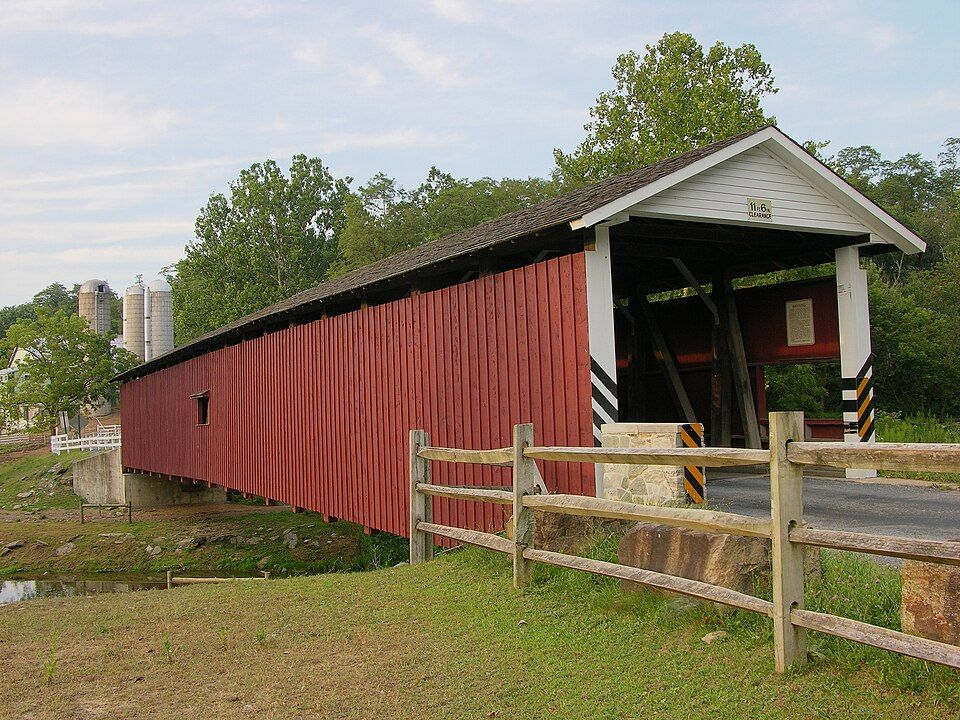
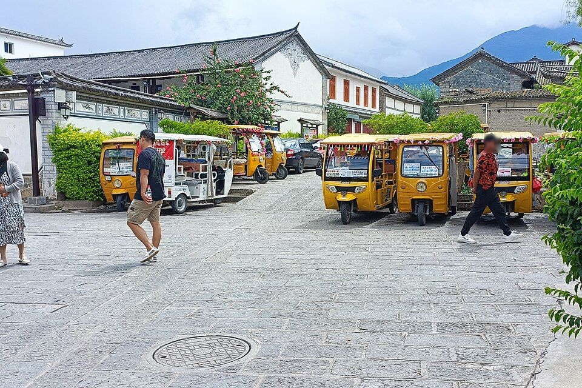
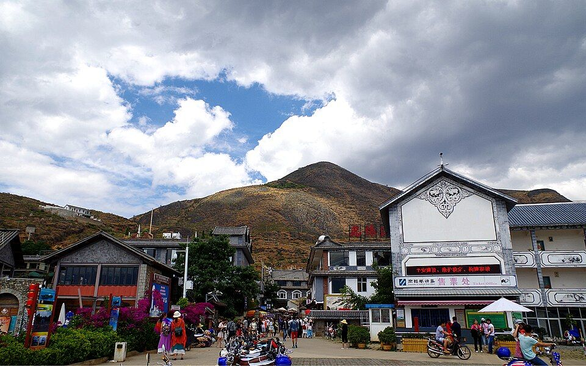
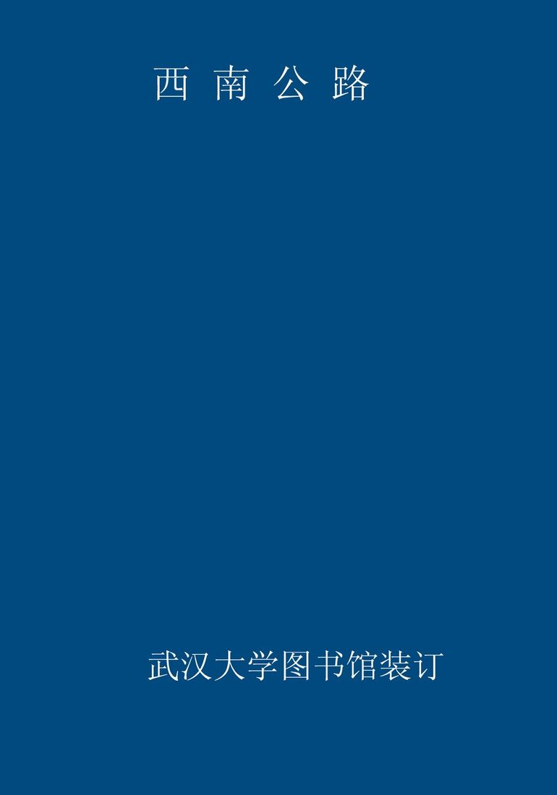
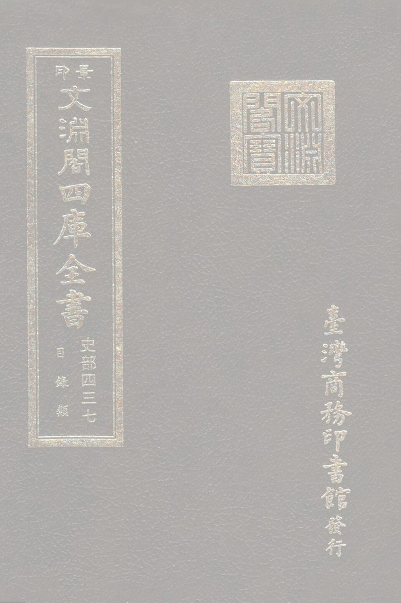
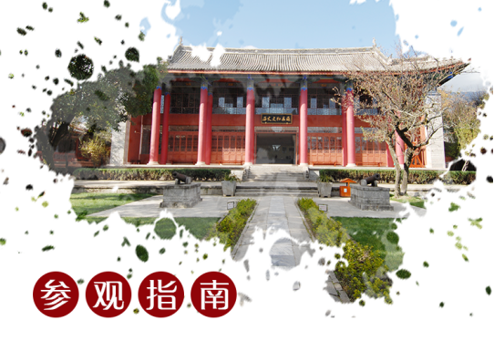

先看结论
-
大理适合的玩法
- 苍洱经典线大理古城、崇圣寺三塔、苍山、洱海生态廊道、龙龛码头、磻溪 S 湾、喜洲、双廊
- 海西慢游线才村、龙龛、马久邑、磻溪、廊桥、喜洲、海舌、周城扎染
- 海东湖景线双廊、挖色、小普陀、海东公路、理想邦、文笔村、鹿卧山
- 古镇村寨线大理古城、喜洲、双廊、沙溪、巍山古城、周城、凤阳邑
- 苍山自然线洗马潭索道、感通索道、中和索道、玉带云游路、寂照庵、感通寺
- 人文博物馆线大理州博物馆、大理市博物馆、大理州非遗博物馆、严家大院、张家花园、太和城遗址
- 远郊一日线沙溪古镇、鸡足山、巍山古城、巍宝山、无量山冬樱、剑川石宝山
-
必去优先级
- 第一梯队大理古城、洱海生态廊道、龙龛码头、磻溪 S 湾、喜洲古镇、双廊古镇、苍山、崇圣寺三塔
- 第二梯队海舌公园、廊桥、才村、周城扎染、寂照庵、凤阳邑、南诏风情岛、文笔村、鹿卧山
- 人文优先大理州博物馆、大理市博物馆、大理州非遗博物馆、严家大院、张家花园、太和城遗址
- 时间多再去沙溪古镇、剑川石宝山、鸡足山、巍山古城、巍宝山、洱源西湖、蝴蝶泉、天龙八部影视城
-
平台高频玩法
- 小红书风格龙龛日出、磻溪 S 湾骑行、廊桥桥洞、喜洲麦田、转角楼、周城扎染、双廊海景咖啡、文笔村彩虹公路、鹿卧山日落
- B 站 Vlog 风格古城慢住、海西生态廊道骑行、喜洲吃粑粑、双廊看洱海、苍山索道、沙溪周五集市
- 抖音路线风格龙龛码头、S 湾、喜洲转角楼、麦田咖啡、海舌夫妻树、双廊、南诏风情岛、理想邦、兴盛大桥、凤阳邑
-
游玩原则
- 大理不适合一天硬环洱海，海西慢骑和海东车行是两种体验
- 洱海边真正舒服的是早晚，正午风大光硬，拍照体验下降
- 苍山强依赖天气，云雾、大风、索道停运时不要硬上
- 喜洲和双廊不要只当打卡点，留出吃饭、咖啡、走巷子的时间
- 沙溪、鸡足山、巍山属于大理州延伸线，建议单独一天或住一晚
快速决策索引
全年月份速查
季节限定景观
景点营业时间和票价速查
-
使用说明
- 以下为常见开放时间和成人基础票价，节假日、索道、观光车、游船、演出、特展会调整
- 开放式古镇、村寨、生态廊道多为免费，店铺、院落、停车、租车按各自收费
- 苍山索道、洱海游船、远郊景区价格动态较多，出发前看官方购票页
-
大理古城和周边
- 大理古城开放式古城，全天可逛，个人游客免费；店铺和酒吧按各自营业
- 洋人街/人民路/复兴路开放式街区，免费；店铺按各自营业
- 五华楼/南门/北门开放式地标，免费；登楼或内部展览以现场公告为准
- 大理市博物馆常见 9:00-17:00，凭有效证件免费领票参观；每日限流，以馆方公告为准
- 大理州非遗博物馆常见周二至周日 9:00-11:30、14:00-17:00，周一闭馆，免费或预约参观以馆方公告为准
- 大理州博物馆常见周二至周日 9:00-17:00，周一闭馆，免费预约；节假日开放以公告为准
- 张家花园常见 8:00-19:00，成人票常见 60 元左右；三道茶/演出以现场为准
- 天龙八部影视城常见 8:30-17:30，成人票常见 40 元左右；演艺项目以景区公告为准
-
苍山片区
- 苍山景区开放时间随索道和天气变化，苍山地质公园门票常见 35 元左右；索道另计
- 洗马潭索道常见 8:30-16:00 左右，受大风和天气影响大；全程往返常见 300 元左右，半程价格以官方购票页为准
- 感通索道常见 8:30-17:00 左右；往返常见 80 元左右，单程常见 50 元左右
- 中和索道常见 8:30-17:00 左右；往返常见 60 元左右，单程常见 30 元左右
- 玉带云游路苍山步道，随索道/景区开放，免费或随苍山门票/索道进入
- 寂照庵/感通寺寺院开放以现场公告为准，常见免费或随喜功德；斋饭以寺院当日安排为准
- 苍山徒步路线开放和管控受天气影响，不建议无准备进山
-
三塔和北线
- 崇圣寺三塔文化旅游区官方开放时间 7:30-18:30；成人票常见 75 元左右，电瓶车另计
- 蝴蝶泉公园常见 7:30-18:00；旺季票常见 55 元，淡季票常见 40 元；电瓶车另计
- 周城扎染村开放式村寨，免费；扎染体验按店铺收费
- 喜洲古镇开放式古镇，免费；严家大院等院落单点收费
- 严家大院博物馆常见 8:30-18:00，成人票常见 20 元左右；以现场公告为准
- 海舌生态公园开放和预约以当地公告为准，通常免费或预约入园；交通车/停车另计
-
洱海生态廊道和海西
- 洱海生态廊道开放式生态廊道，全天可步行，免费；部分段落夜间照明有限
- 龙龛码头开放式湖岸，免费；日出季人多
- 才村开放式村落/码头，免费；船、停车、租车另计
- 磻溪 S 湾开放式廊道打卡点，免费；租车、咖啡、停车另计
- 廊桥开放式打卡点，免费；注意车辆和人流
- 马久邑/下波淜/海西村落开放式村落，免费；店铺按各自营业
- 自行车/电动车租赁按商家收费，生态廊道部分路段禁止电动车或机动车进入
-
海东和双廊
- 双廊古镇开放式古镇，全天可逛，免费；海景店铺按各自营业
- 南诏风情岛常见 8:30-17:30，成人票常见 50 元左右；船票/套票以官方购票页为准
- 挖色/小普陀开放式湖岸和小岛观景点，免费或低价船票以现场公告为准
- 海东公路/文笔村/鹿卧山开放式道路和村落打卡点，免费；注意停车和交通安全
- 理想邦开放式商业/酒店街区，外部拍照免费；店铺和住宿按各自收费
- 罗荃半岛常见 8:30-17:30，成人票常见 30 元左右；以现场公告为准
-
大理市区和下关
- 洱海公园开放式公园，免费；开放时间以现场公告为准
- 兴盛大桥开放式桥梁打卡点，免费；注意交通安全
- 下关城区商圈开放式城市区域，免费；店铺按各自营业
-
远郊和大理州延伸
- 沙溪古镇开放式古镇，全天可逛，免费；古戏台、院落、展馆可能单点收费
- 剑川石宝山常见 8:00-18:00，成人票常见 60 元左右；观光车另计
- 鸡足山山门常见 8:00-18:00，成人票常见 55 元左右；索道、观光车另计
- 巍山古城开放式古城，免费；拱辰楼、院落、展馆以现场公告为准
- 巍宝山常见 8:00-18:00，成人票常见 40 元左右；以景区公告为准
- 无量山樱花谷开放和收费以当年景区/茶庄公告为准，冬樱季交通和停车可能管控
- 洱源西湖常见白天开放，成人票/船票套票以官方购票页为准
行前准备
-
预约和核对
- 苍山索道每天看风力、云雾、索道停运公告
- 洱海生态廊道确认可骑行段、车辆限制和租车点
- 崇圣寺三塔节假日提前购票，预留 2-3 小时
- 海舌公园看是否需要预约、是否开放
- 沙溪/鸡足山/巍山确认交通班次和返程时间
-
穿搭和装备
- 全年防晒霜、帽子、墨镜、舒适鞋
- 春秋薄外套，早晚温差大
- 夏季雨具、防晒袖套，洱海边风大
- 冬季早晚冷，苍山高处和洱海边更冷
- 骑行手套、防晒、补水，别穿拖鞋长骑
-
交通原则
- 古城、才村、龙龛适合打车/骑行/公交接驳
- 洱海海西适合骑行和慢游，海东适合包车/自驾
- 双廊、沙溪、鸡足山、巍山都要单独计算车程
- 大理站/大理机场到古城、喜洲、双廊方向车程差异大，住宿按行程选
住宿建议
-
大理古城/南门/东门/人民路
- 适合第一次来、吃喝方便、夜晚逛古城、去苍山和海西均衡
- 优点餐饮多，交通方便，去三塔和苍山近
- 缺点旺季人多，古城内拖箱子不方便
- 关键词古城南门、东门、人民路、玉洱路、叶榆路
-
才村/龙龛/洱海生态廊道
- 适合看日出、骑行、想靠近洱海
- 优点早起看日出方便，离生态廊道近
- 缺点餐饮和夜生活不如古城，海景房价格高
-
喜洲
- 适合麦田、白族建筑、慢住、亲子
- 优点田园氛围好，离海西和周城近
- 缺点晚上选择少，去古城有距离
-
双廊
- 适合海景房、情侣、湖边发呆、海东日落
- 优点洱海东岸视野好，海景民宿多
- 缺点核心区商业化，旺季堵车和价格高
-
下关/大理站
- 适合赶高铁/飞机、预算型住宿、市区生活
- 优点交通方便，价格相对低
- 缺点旅行氛围不如古城/洱海边
-
沙溪
- 适合周五集市、古镇慢住、想远离大理热门区
- 优点慢、安静、古镇质感好
- 缺点离大理市区远，适合至少住一晚
地图分区
-
古城苍山区
- 核心点大理古城、崇圣寺三塔、苍山索道、寂照庵、感通寺、天龙八部影视城
- 玩法古城逛吃、苍山、寺院、博物馆
-
洱海海西区
- 核心点龙龛、才村、马久邑、磻溪 S 湾、廊桥、喜洲、海舌、周城
- 玩法日出、生态廊道骑行、麦田、扎染、白族建筑
-
洱海海东区
- 核心点双廊、南诏风情岛、挖色、小普陀、海东公路、文笔村、鹿卧山、理想邦
- 玩法湖景、海景咖啡、日落、车行拍照
-
下关市区
- 核心点大理州博物馆、洱海公园、兴盛大桥、下关商圈
- 玩法博物馆、交通中转、市区吃喝
-
大理州延伸
- 核心点沙溪、石宝山、鸡足山、巍山古城、巍宝山、无量山冬樱、洱源西湖
- 玩法古镇、佛教名山、历史文化、冬樱、温泉
核心景点
-
大理古城
- 最佳时间全年，傍晚到夜间氛围更好
- 看点南门、五华楼、人民路、洋人街、玉洱路、床单厂、古城小店
- 玩法白天走街巷，晚上吃饭喝咖啡听音乐
- 搭配三塔、苍山、才村
- 值不值得专程第一次来值得，后续可作为住宿和吃喝 base
-
崇圣寺三塔
- 最佳时间上午或傍晚，晴天有苍山背景
- 看点三塔、倒影池、崇圣寺建筑群、苍山洱海视角
- 玩法先拍三塔和倒影，再向后走寺院轴线
- 搭配大理古城、苍山、天龙八部影视城
- 值不值得专程喜欢历史建筑值得
-
苍山
- 最佳时间10 月至次年 5 月晴天，5-6 月看杜鹃
- 看点苍山雪、洗马潭、玉带云游路、清碧溪、俯瞰洱海
- 玩法轻松选感通索道，登高选洗马潭索道，徒步选中和到感通玉带路
- 搭配寂照庵、感通寺、大理古城
- 值不值得专程天气好值得；云雾大不建议硬上
-
洱海生态廊道
- 最佳时间全年，早晚最好
- 看点湖岸、骑行道、红杉/水杉、海鸥、村落、田园
- 玩法龙龛看日出，磻溪 S 湾和廊桥拍照，骑到喜洲吃粑粑
- 搭配才村、喜洲、海舌
- 值不值得专程值得，是大理慢游核心
-
龙龛码头
- 最佳时间冬春日出、海鸥季
- 看点日出、栈道、洱海、海鸥、杉树
- 玩法住古城/才村早起打车或骑车
- 提醒冬季清晨人多且冷
-
磻溪 S 湾
- 最佳时间上午或傍晚
- 看点网红弯道、洱海湖岸、骑行
- 玩法顺路拍照即可，不必停太久
- 提醒旺季人多，注意骑行安全
-

开放图库 廊桥游玩攻略最佳时间：晴天上午或傍晚；看点：桥洞构图、洱海、湿地- 最佳时间晴天上午或傍晚
- 看点桥洞构图、洱海、湿地
- 玩法和 S 湾、喜洲同线
-

开放图库 喜洲古镇游玩攻略最佳时间：3-5 月麦田、9-10 月稻田，全年都适合慢逛；看点：白族古建筑、转角楼、麦田、严家大院、喜洲粑粑- 最佳时间3-5 月麦田、9-10 月稻田，全年都适合慢逛
- 看点白族古建筑、转角楼、麦田、严家大院、喜洲粑粑
- 玩法吃粑粑、逛巷子、看田园、喝咖啡
- 搭配海舌、周城、廊桥
- 值不值得专程值得，不要只拍转角楼
-
海舌生态公园
- 最佳时间晴天早晚
- 看点洱海湿地、树林、夫妻树、湖岸
- 搭配喜洲、周城
- 提醒开放状态和预约规则变化较多
-
周城扎染
- 最佳时间全年，下午体验更从容
- 看点白族扎染、村寨、体验工坊
- 玩法做扎染、买布艺、吃白族菜
- 搭配喜洲、蝴蝶泉
-

开放图库 双廊古镇游玩攻略最佳时间：全年，傍晚和晴天最美；看点：洱海东岸、海景咖啡、玉几岛、南诏风情岛- 最佳时间全年，傍晚和晴天最美
- 看点洱海东岸、海景咖啡、玉几岛、南诏风情岛
- 玩法住海景房、喝咖啡、看日落
- 值不值得专程第一次来值得，旺季避开拥堵
-
南诏风情岛
- 最佳时间晴天上午或下午
- 看点洱海岛屿、观景、南诏文化符号
- 搭配双廊
-

开放图库 文笔村/海东公路游玩攻略最佳时间：晴天傍晚；看点：彩虹路、洱海视角、村落和咖啡- 最佳时间晴天傍晚
- 看点彩虹路、洱海视角、村落和咖啡
- 玩法车行海东线顺路拍
- 提醒路边拍照注意车辆
-
鹿卧山
- 最佳时间晴天傍晚
- 看点洱海日落、山海视角
- 提醒小众机位注意安全，不要进入危险区域
-
凤阳邑
- 最佳时间下午
- 看点茶马古道村落、《去有风的地方》相关热度、黄土墙街巷
- 搭配古城、洱海生态廊道
-
沙溪古镇
- 最佳时间全年，周五集市最有生活感
- 看点寺登街、古戏台、玉津桥、先锋书店、周五集市
- 玩法住一晚、喝咖啡、赶集、看夕阳
- 值不值得专程值得，但不适合从大理市区当天来回赶太紧
-
来源图 鸡足山游玩攻略最佳时间：秋冬晴天、佛教节日；看点：金顶寺、云海日出、佛教名山- 最佳时间秋冬晴天、佛教节日
- 看点金顶寺、云海日出、佛教名山
- 玩法住一晚看日出更完整
- 提醒交通耗时，索道和山路都要预留时间
-
巍山古城
- 最佳时间春秋、蓝花楹季、赶街日
- 看点南诏古城、拱辰楼、老街、小吃
- 玩法吃扒肉饵丝、逛古城、顺路巍宝山
-
巍宝山
- 最佳时间春秋
- 看点道教名山、古建、山林
- 搭配巍山古城
-
无量山樱花谷
- 最佳时间11 月下旬至 12 月中旬
- 看点茶园冬樱、日出、云海
- 提醒离大理市区远，适合自驾或摄影专程
街区、夜市和市场
-
大理古城人民路/洋人街/复兴路
- 最佳时间下午到晚上
- 可吃饵丝、烤乳扇、凉鸡米线、烧烤、咖啡、酒吧
- 提醒主街商业化，往小巷走更舒服
-
床单厂艺术区
- 最佳时间下午到晚上
- 看点文创、咖啡、展览、小店
- 搭配大理古城
-
北门菜市场/古城菜市场
- 最佳时间早上
- 可买水果、乳扇、菌菇、鲜花、当地小吃
- 玩法看本地生活，吃早餐
-
喜洲四方街
- 最佳时间上午到下午
- 可吃喜洲粑粑、白族菜、乳扇、咖啡
-
沙溪周五集市
- 最佳时间周五上午
- 可买菌子、草药、农产品、手作、土特产
-

开放图库 双廊海街/玉几岛周边游玩攻略最佳时间：下午到晚上；看点：海景餐厅、咖啡、民宿、拍照- 最佳时间下午到晚上
- 看点海景餐厅、咖啡、民宿、拍照
-
下关夜市/市区烧烤
- 最佳时间晚上
- 可吃烧烤、米线、凉品、火塘菜
美食总表
-
必吃主食和小吃
- 喜洲粑粑甜咸两种，喜洲最顺路
- 饵丝/耙肉饵丝早餐代表，巍山和大理都值得试
- 凉鸡米线夏天尤其适合
- 烤乳扇大理代表小吃，接受奶香和微酸口感再多买
- 乳饼可煎可烤，适合白族菜
- 饵块早餐或路边小吃
- 米凉虾/木瓜水/冰粉夏季解暑
-
白族菜和正餐
- 砂锅鱼
- 酸辣鱼
- 白族土八碗
- 雕梅扣肉
- 生皮接受度因人而异，注意卫生和正规店
- 洱海海菜
- 乳扇炒韭菜
- 野生菌火锅夏秋季节，必须正规店煮透
-
饮品和甜点
- 白族三道茶
- 大理咖啡
- 鲜花茶/玫瑰饮
- 酸木瓜饮
- 梅子酒/雕梅酒
-
伴手礼
- 乳扇/乳饼
- 鲜花饼
- 下关沱茶
- 雕梅
- 大理扎染
- 鹤庆银器
- 剑川木雕小物
- 云南咖啡
餐厅和店铺
-
喜洲粑粑老店
- 类型小吃
- 适合喜洲古镇顺路吃
- 提醒甜咸都可试，刚出炉更好
-
白族石板烧/白族菜馆
- 类型正餐
- 适合多人吃白族菜、砂锅鱼、土八碗
-
古城饵丝/米线店
- 类型早餐
- 适合住古城时就近找高分老店
-
喜洲田园咖啡
- 类型咖啡/甜品/拍照
- 适合麦田季和稻田季
- 提醒热门店旺季排队，别为了咖啡踩田
-
双廊海景咖啡/海景餐厅
- 类型咖啡/简餐/拍照
- 适合下午发呆和看日落
- 提醒海景溢价明显，先看菜单
-
周城扎染体验店
- 类型手作体验
- 适合亲子、情侣、伴手礼
- 提醒问清体验时长、成品领取和是否包邮
-
沙溪咖啡/小馆
- 类型咖啡、白族菜、云南菜
- 适合住一晚慢逛
博物馆和展馆
-
大理州博物馆
- 类型地方综合博物馆
- 重点南诏大理国、白族文化、地方历史
- 时间1.5-2.5 小时
-

来源图 大理市博物馆游玩攻略搭配：大理古城- 类型古城内博物馆
- 重点大理历史、文物、古城文化
- 搭配大理古城
-
大理州非遗博物馆
- 类型非遗专题馆
- 重点白族三道茶、扎染、木雕、银器、甲马、白剧、大本曲
- 搭配大理古城
-
严家大院博物馆
- 类型喜洲白族民居
- 重点白族建筑、喜洲商帮、院落空间
- 搭配喜洲古镇
-
张家花园
- 类型白族民居/园林
- 重点三坊一照壁、园林、白族建筑
- 搭配古城、苍山线
-
太和城遗址/南诏德化碑
- 类型南诏历史遗址
- 适合历史爱好者
-
大理农村电影历史博物馆/床单厂展览
- 类型小众展馆/文创展览
- 搭配古城和床单厂
自然、远郊和周边
-
沙溪古镇
- 适合慢住、古镇、周五集市、咖啡、摄影
- 时间1-2 天
- 提醒从大理市区当天往返偏赶
-
剑川石宝山
- 适合石窟、山林、历史
- 搭配沙溪
-
来源图 鸡足山游玩攻略时间：1-2 天- 适合佛教名山、云海、日出、徒步
- 时间1-2 天
-
巍山古城
- 适合南诏历史、古城、小吃
- 食物扒肉饵丝、一根面、蜜饯
-
巍宝山
- 适合道教名山、古建、清静山林
- 搭配巍山古城
-
洱源西湖
- 适合湿地、游船、田园
- 搭配洱源温泉
-
无量山樱花谷
- 适合冬樱摄影、茶园、云海
- 时间1-2 天，自驾更合适
-
宾川/鸡足山周边
- 适合佛教文化、热区水果、山地风光
-
漾濞石门关
- 适合峡谷、玻璃栈道、苍山西坡风光
- 提醒项目和票价以景区公告为准
路线模板
远郊一日游决策
交通细节
-
到达大理
- 大理站去古城、下关、喜洲都方便，是主要高铁站
- 大理机场离下关和海东更近，去古城/双廊打车或机场巴士
- 大理洱海站注意和大理站区分，看具体车次和接驳
-
大理站到古城
- 公交/三塔专线/打车均可
- 行李多建议打车到酒店附近，再步行进古城
-
古城到海西
- 龙龛/才村可打车或骑行
- 喜洲可公交、打车、包车或骑行分段
-
海西骑行
- 才村到喜洲是经典段
- 新手不要一天骑太远，风大时更累
- 生态廊道规则随管理变化，按现场指引
-
海东交通
- 双廊、挖色、小普陀、文笔村建议包车/自驾/拼车
- 海东公路拍照注意车辆，不要站路中间
-
去沙溪
- 通常需到剑川中转或包车
- 周五集市建议前一晚住沙溪
-
去鸡足山/巍山/无量山
- 自驾/包车效率高
- 公共交通要预留换乘时间和末班车
避坑和取舍
-
不要一天硬环洱海
- 看起来一圈不大，实际拍照、堵车、吃饭都耗时
-
不要正午强骑海西
- 风大、晒、光线硬，早晚体验更好
-
不要天气差硬上苍山
- 云雾大看不到洱海，大风可能索道停运
-
不要踩田拍照
- 喜洲麦田和稻田是农田，不是布景
-
不要在古城主街盲买高价银器玉石茶叶
- 真想买先做功课，到正规店
-
不要把双廊想象成安静渔村
- 核心区商业化明显，想安静要住外围或淡季
-
不要低估大理紫外线
- 阴天也晒，海边和苍山更明显
-
不要随意下洱海涉水
- 注意生态保护和安全
-
不要被低价包车/旅拍套路
- 先问清路线、时长、停车、二消和照片交付